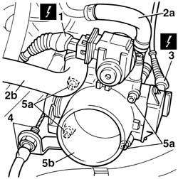

1056B14 throttle case - r + r
- Path
- Procedures > 10 ENGINE > 1056 PETROL INJECTION SYSTEM > 1056B multi-point injection system (mpi) > 1056B14 throttle case - r + r
- Kind
- repair procedure (removal / refitting; the operation number is the code)
- Applies to
- engines: 1.6 TS ; all production periods
- Interactive page
- https://sloeber94.github.io/elrnDB-a156/en/#/3237680
Applies to: engines: 1.6 TS ; all production periods
 Removing
Removing
 Refitting
Refitting1048A34 sleeve(s) from flow meter to air supply capacity case - r + r
1. Disconnect the constant idle actuator electrical connection.
 | Name | Connector |
|---|---|---|
1 | Idle actuator |
2. Disconnect both coolant inlet and outlet pipes (2a-2b) from the throttle body.
3. Disconnect the throttle position switch (potentiometer) electrical connection.
| Name | Connector |
|---|---|---|
3 | Throttle position sensor |
4. Disconnect the accelerator cable.
Release the pipes from the fasteners on the bracket under the throttle body.
5. Undo the four bolts (5a) and remove throttle body (5b) with its gasket.

Applies to: engines: 1.6 TS ; all production periods
Refitting
RemovingFit the throttle body gasket.
Fit the throttle body on the side of the intake casing and tighten the four bolts.
 | Fastening | Component | Ø | Value (daNm) |
|---|---|---|---|---|
- | Bolt | BUTTERFLY VALVE CASE/S (MPI) | M8 | 1.4 |
Position the pipes on the fastenings on the bracket beneath the throttle body.
Reconnect the throttle cable.
Connect the throttle position switch electrical connection to the throttle.
Reconnect both coolant inlet and outlet hoses to the throttle body.
Connect the constant idle actuator electrical connection.
1048A34 sleeve(s) from flow meter to air supply capacity case - r + r